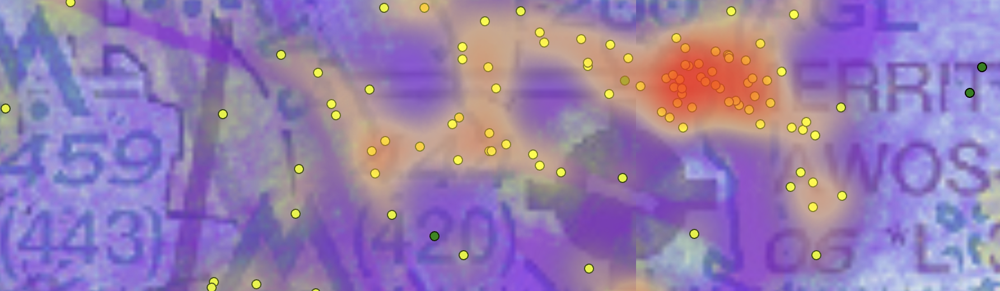

| Airport | Name | State | Nearby Events | Data Quality |
|---|---|---|---|---|
| KWVI | Watsonville Muni | CA | 24 | Good |
| KPAO | Palo Alto | CA | 12 | Fair |
| KSQL | No data available | |||
This information is experimental and incomplete. Not for operational use.
This site is a work in progress and may contain errors, omissions, or misclassified events. All information is provided for educational and situational awareness purposes only, and is not approved for operational use. False positive and false negative events are certainly present, and no judgement is made against the pilots of any aircraft found here. Official aeronautical publications and NOTAMs remain your authoritative sources for flight planning and operations. Use of this site is entirely at your own risk, and the authors make no warranties, express or implied, regarding the accuracy or completeness of the data presented.
For pilots: be aware of airborne hotspots — For airport managers: inform your procedures & outreach

Thanks to the fine folks at adsb.lol, global, high-resolution, historical ADS-B data is now available for research and analysis. This site provides an analysis of where airplanes are getting close together at your favorite airports, in the hopes that it will be useful to improve awareness and safety.
Of course, not every event like this represents a safety issue. Common benign scenarios:
Formation flights — Parallel runways — Helicopters operating opposite a fixed-wing pattern — Noisy ADS-B data
Analysis by local pilots will also be helpful to fully understand the data.More airports and regions outside the US will be added upon request. FAQ -- More about our methodology here